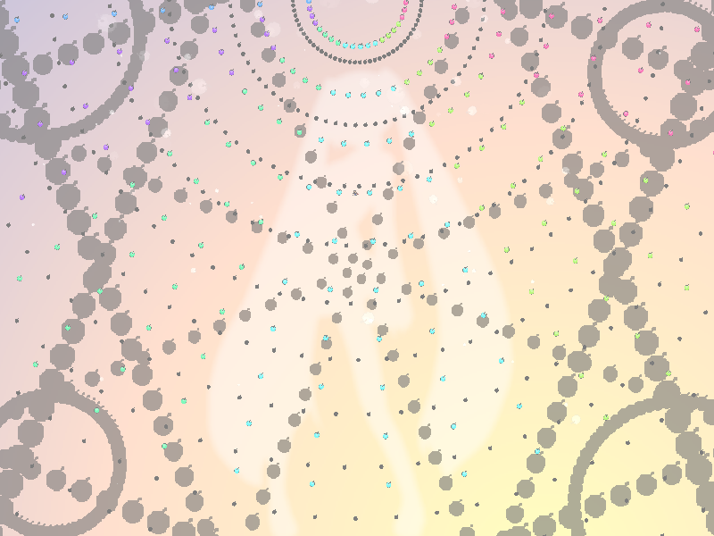
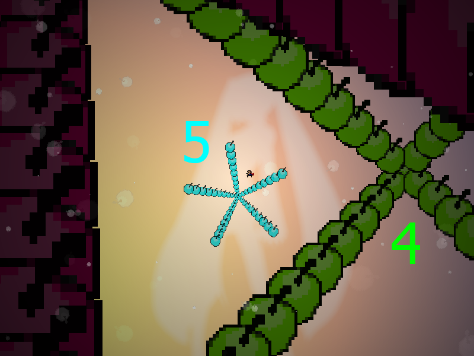
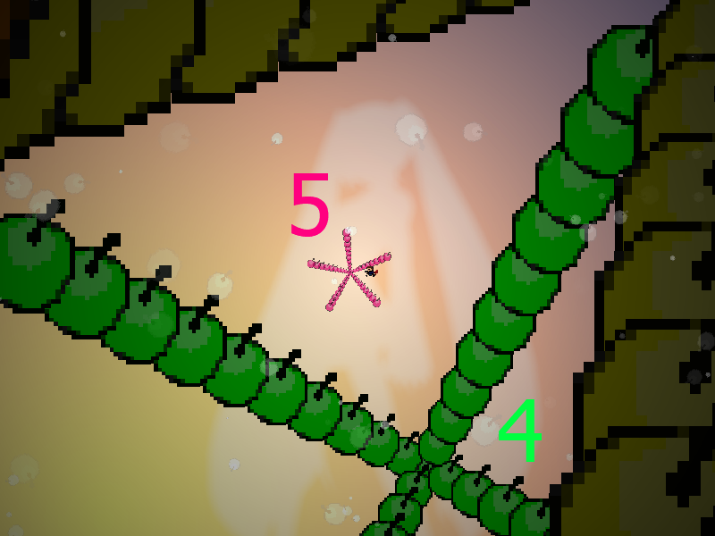
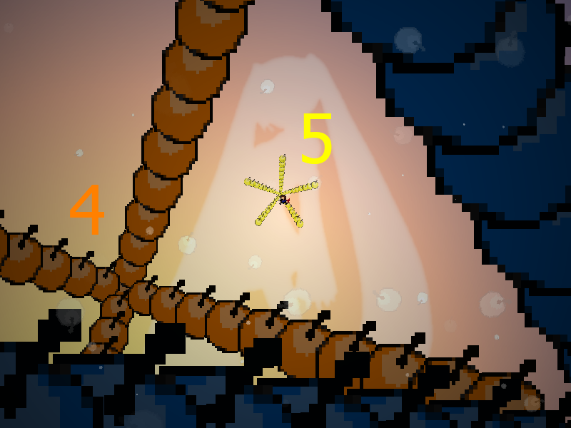
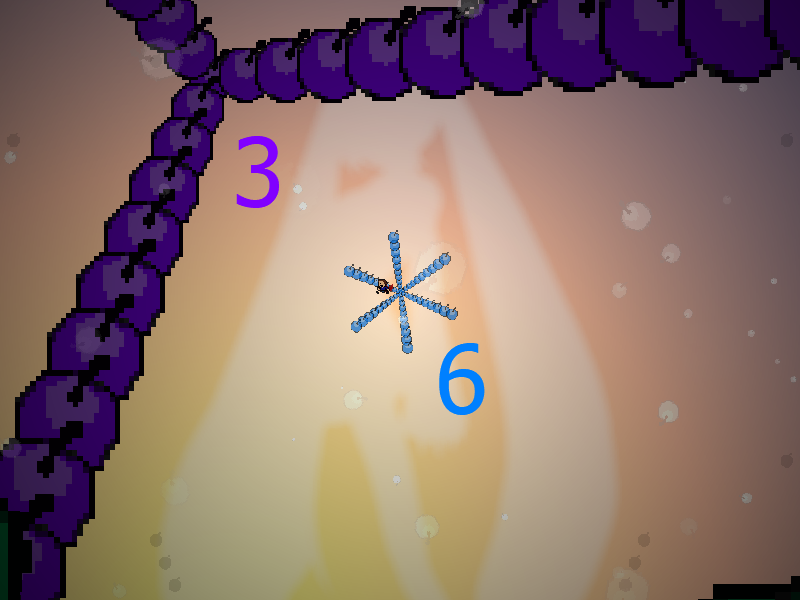
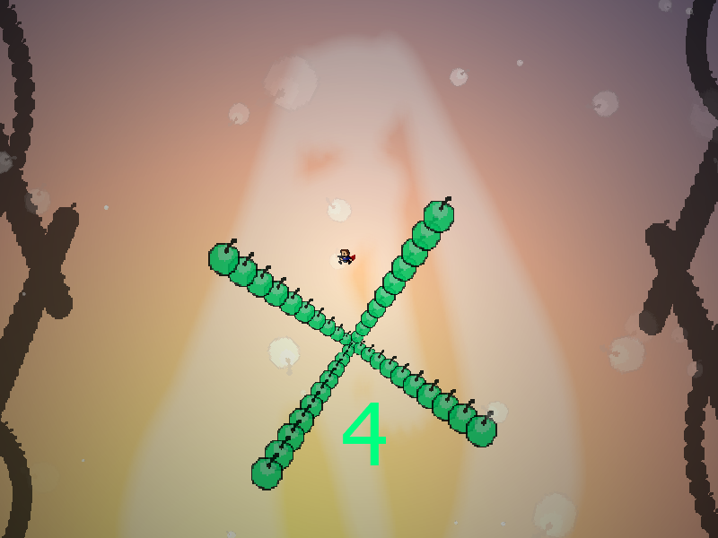
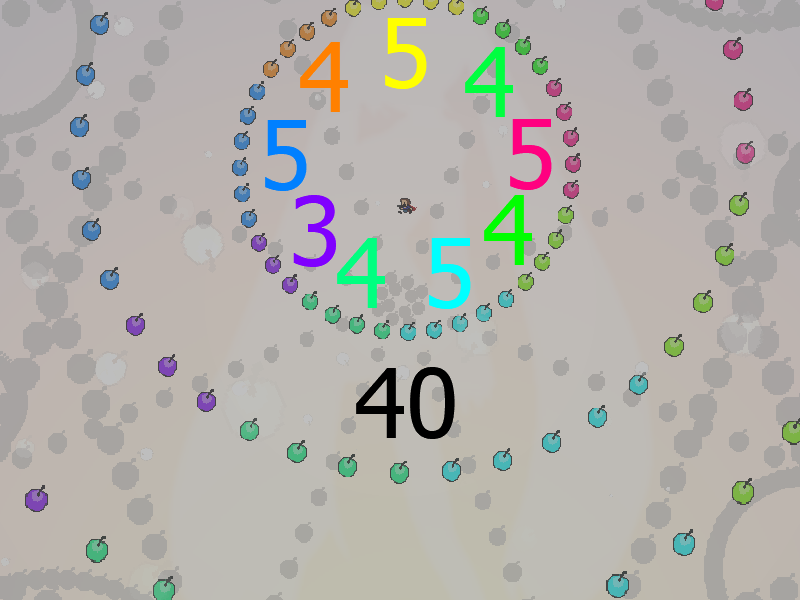
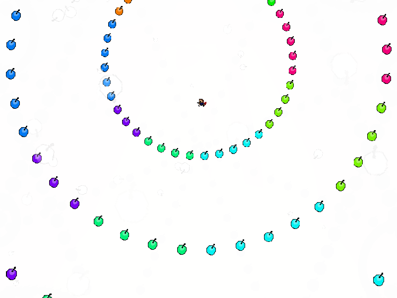
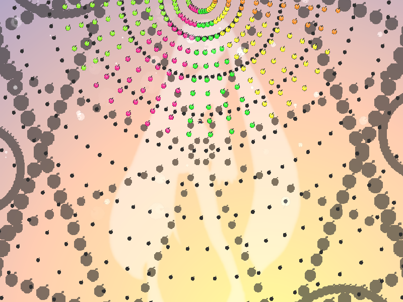

chapter11 - section9

| creator | segment | label | jump |
|---|---|---|---|
| NN | 2:39.90~2:46.20 | Q+P*A | infinite |
フラッシュ暗算を題材とした角度のみがランダムな弾幕です。
2:39.90~2:42.30において画面中央を中心として画面外から周期的に生成されるアスタリスク状弾幕に関して、これらは3~6の方向数をとります（fig.11-9.1.a~fig.11-9.1.e）。
なお、それぞれのアスタリスク状弾幕については、生成から24step経過後に当たり判定がなくなります。





2:42.30において画面中央を中心として生成される円形弾幕については、その方向数が2:39.90~2:42.30において出現したアスタリスク状弾幕の方向数を全て足し合わせたものとなります（fig.11-9.2）。

2:42.90において同心円状に整列した円形弾幕が中心に向かって折り返す際、その方向数が偶数であるか奇数であるかによって折り返された後の形状が元の形状に対して変化するかどうかが異なります（fig.11-9.3.a, fig.11-9.3.b）。


したがって、出現するアスタリスク状弾幕の方向数の合計値が偶数であるか奇数であるかを判断する必要があります。
なお、アスタリスク状弾幕の方向数の合計値に関しては39~42のいずれかの値をとり、また出現するアスタリスク状弾幕のうち、その方向数が奇数であるものは1個以上4個以下となります。
また、2:43.30以降において画面上部を中心として生成される同心円状弾幕（fig.11-9.4）については、4-9および8-8と同様に発射源から離れ続けることで回避することができます。